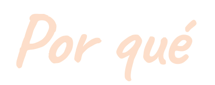

Soy un venezolano nacido un 16 de septiembre, en coincidencia con una fecha nacional méxicana, algunos años atrás. Y mi nombre es coincidente con uno de sus héroes principales, EMILIANO ZAPATA, de esa revolución y donde se hizo famoso en mi nombre.
Aparte de una hermosa madre, un padre que hoy hace parte del aire, y mucha otra gran familia. Tengo un maravilloso hijo de 10 años que es un capo con todo lo que es capaz de enseñarme de la vida.
Agnóstico por vocación, ateo por provocación...
Actualmente radicado en Caba, Argentina, luego de 22 años de actividad técnico/docente asociada a la química con posgrado en Bioquímica.
Al menos 3 años de experiencia en IT respecto a bases de datos, redes, y programación principalmente en Javascript llegó el momento de cambiar mi vida...
Soy de practicar deportes como:
- Béisbol
- Baloncesto
- Fútbol
- Vóleibol
Por otra parte, me gusta la energía que da correr. Me motiva leer buenos libros, desde literatura hasta temas específicos; aprender siempre y de muchos temas, de intereses o actualidad, en fin estar informado. Tambien, amante de cocinar ricos platos para agasajar a terceras personas. Bailar, principalmente ritmos latinos, llevando y dejándose llevar...
Luego de las experiencias constructivas en el marco de las IT siempre me pregunté ¿porqué no certificar los conocimientos y esa experticia adquirida?...
y si querés saber alguna razón (pulsame)...
